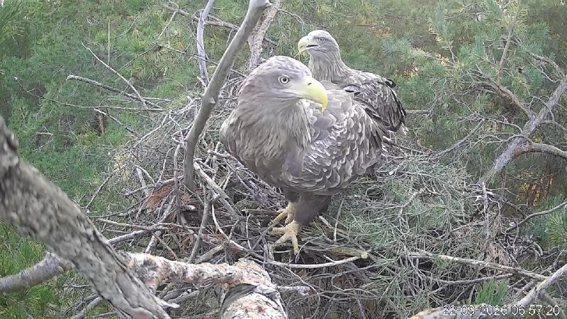
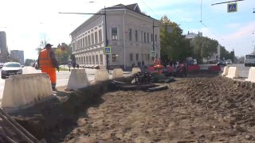
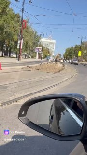
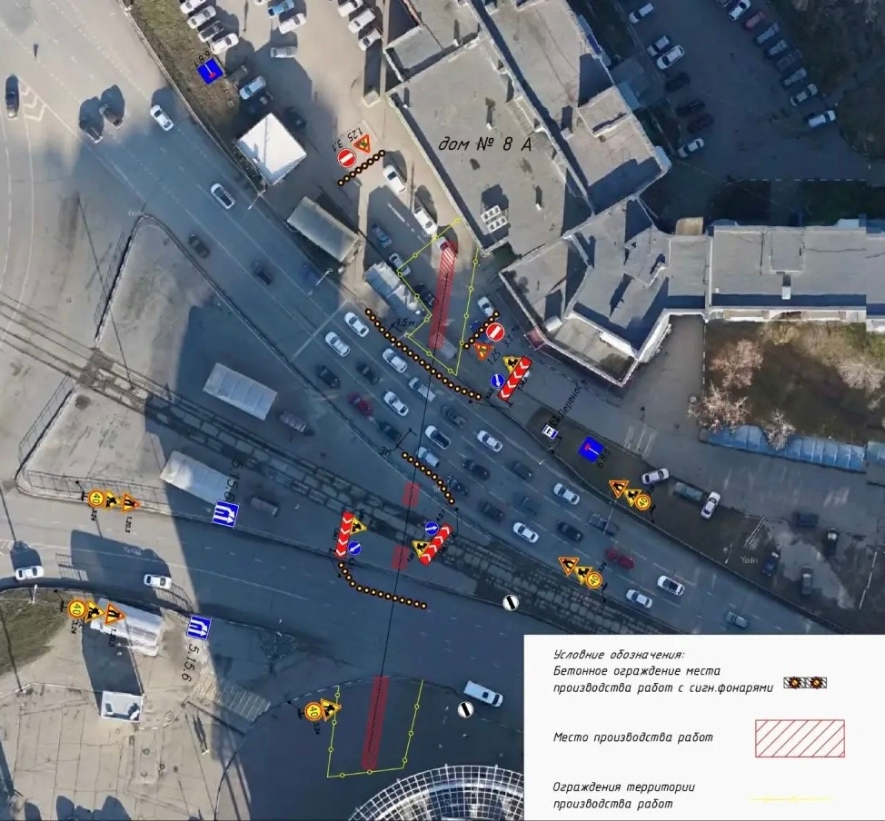

Каждая семья-участник марафона будет заполнять личный дневник проекта, отвечая на вопросы и…
👍 Каждая семья-участник марафона будет заполнять личный дневник проекта, отвечая на вопросы и выполняя творческие задания.…
НовостьПо данным источника
Мужчина оставил автомобиль на проезжей части и упал вниз, предсмертных записок не найдено. Обстоятельства и точную причину гибели выясняют СК и полиция.…
👍 Каждая семья-участник марафона будет заполнять личный дневник проекта, отвечая на вопросы и выполняя творческие задания.…

За счёт нового сбора рассчитывают привлечь дополнительно 200–250 млрд рублей в 2027–2030 годах, пишут СМИ.…


Без этого документа область юридически не могла ввести ограничения — федеральные нормы требуют предварительно уведомить Росалкогольтабакконтроль.…


Строители уже начали укладывать рельсошпальную решетку на одном из самых оживленных пересечений в историческом центре.…


Чтобы восстановить работу воздушной гавани, транспортные прокуроры внесли представление руководству компании, эксплуатирующей транспортный объект.…


Спецтехника «Управления инженерной защиты» работала в районе Пригородной, 21.…

19 сентября в акватории реки Волги рядом с переправой было обнаружено тело 31-летнего жителя Ульяновска. Погибшего искали десять дней.…

С 1979 года он работал в должности заместителя генерального директора УАПК по кадрам, а с 1986 по 1990 год – заместителем генерального директора УАПК по экономике.…

Высокую награду ульяновский лидер получила за многолетнюю эффективную работу — она возглавляет организацию с 2011 года.…

На движение по самой улице Пушкарёва эти ограничения никак не повлияют — она полностью открыта для машин.

🏡 В жилом комплексе «На Маршала Устинова» стартовала масштабная осенняя распродажа .…

По словам председателя Гордумы Ксении Душковой, сейчас завершается укладка плитки и начинается установка малых архитектурных форм.…

Сегодня, 23 сентября, свой день рождения отмечают: Любовь Денисова — директор Ульяновского фармацевтического колледжа Зоя Рейтер — Заслуженная артистка Чувашской АССР 73online поздравляет именинников!…

В Заволжском районе Ульяновска выясняют обстоятельства вечерней дорожной аварии, в которой тяжело пострадал пешеход.…

Птенец был цел и активен, но имел проблемы с полетом — оставлять его там было…

Препараты распределяют по медорганизациям, прививочная кампания стартует в ближайшие дни.…

У знаменитого птенца солнечных орлов Роси, за драматичной судьбой которого следили тысячи любителей природы, началась взрослая кочевая жизнь.…


Как сообщил орнитолог Михаил Корепов, спустя неделю после выпуска из зоопарка молодой орел совершил мощный марш-бросок: за три часа он пролетел 24 км по прямой на юг и ушел за границы региона.…

Умный ульяновский софт помогает крупному бизнесу мгновенно перестраивать маршруты в обход заблокированных каналов и оптимизировать взлетевшую в цене доставку.…

В управление доставлены 26 человек. Семь иностранных граждан привлечены к административной ответственности, сообщили в УМВД.…

Кроме того, рельсы нужно поменять на примыканиях улицы Спасской к Пластова и Радищева, там работы планируется начать на этой неделе.

С наградой её поздравил губернатор Алексей Русских. Сибагатулина возглавляет региональное отделение с 2011 года.…

В мэрии объясняют спешку началом учебного года: к 1 сентября уложили временный слой асфальта за счет подрядчика.…

По состоянию на утро 23 сентября специалисты «Ульяновскэлектротранса» разложили рельсы и шпалы по направлению в северную часть города — сегодня их закрепят между собой.…

Причина — ремонт тепломагистрали М-10. Работы ведёт «Т Плюс» в подземном канале без раскопки основной проезжей части.…

Заодно сняли асфальт, который положили совсем недавно. Мэрия говорит: плановая замена, дополнительных денег не потребуется.…

Он обвиняется в получении взятки и превышении должностных полномочий по нескольким эпизодам.…

На улице Пронина дорогу делают уже третий месяц. Местами она так и не сделана, появились непонятные стыки.…
Он занимает пост председателя нижней палаты парламента с октября 2016 года — уже 10 лет.…

Поговорим о реализации проекта «Выбирай своё» и наших партийных акций. Воронежская область очень активна по всем направлениям!…
Ничего по этому фильтру в ленте нет — показать все материалы.
Возник 15.09, пик 15.09 — сюжет держали 34 источника. Полная дуга — в недельнике.